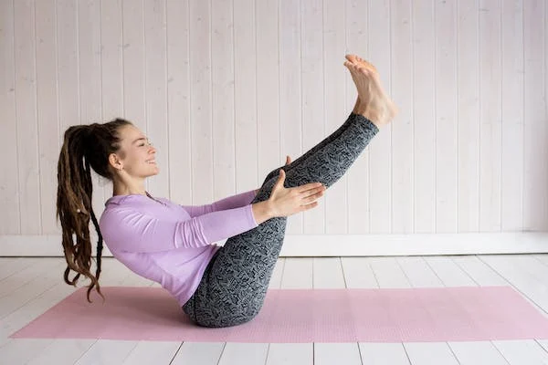

COMO ALIVIAR EL DOLOR DE ESPALDA CON PILATES

Según el estudio EPISER de la Sociedad Española de Reumatología (SER), aproximadamente,
el 80% de la población va a sufrir dolor de espalda en algún momento de su vida.
Según datos del Sistema Nacional de Salud publicados en 2019, la lumbalgia es el segundo problema de salud crónico en España y afecta a casi el 18% de la población. Además,
es considerada la principal causa de baja laboral e incapacidad en el mundo.
Hay muchas opciones para aliviar el dolor de espalda con o sin Pilates.
Yoga, gimnasio, pilates…¿Cuál es el mejor ejercicio para aliviar el dolor de espalda?

Varios investigadores de la Universidad de Castilla-La Mancha (UCLM) han publicado un estudio que analizaba qué ejercicio es el mejor para aliviar el dolor y las restricciones de movimiento que provoca la lumbalgia.
Después de revisar a más de 9.000 pacientes, los investigadores aseguran que, en realidad, prácticamente cualquier ejercicio físico ayuda a disminuir el dolor y la discapacidad de la lumbalgia.
Pero lo cierto es que existen ejercicios más efectivos que otros para aliviar los síntomas dolor de espalda y cansancio
¿Y sabes cuál es la más eficaz para reducir el dolor?
PILATES
¿Y para reducir las restricciones de movilidad o discapacidad asociadas al dolor lumbar?
También, PILATES, seguido de los ejercicios de fuerza y de core.
Pilates es el mejor tratamiento para el dolor de espalda baja y practicarlo puede ayudarte a aliviar ese dolor de espalda que no desaparece.
¿Por qué Pilates para quitar el dolor de espalda?

Pilates tiene una gran ventaja: es apto para personas que no han hecho nunca deporte.
Es un método integral con el que se trabaja todo el cuerpo y los ejercicios se realizan de forma gradual, con distintos niveles y grados de dificultad.
Son ejercicios progresivos y de bajo impacto, por lo que se genera menos presión sobre la columna que otras disciplinas deportivas.
Además, el propio método te guía a realizarlos de una manera suave y controlada, al compás de la respiración, para evitar así tirones y movimientos bruscos que podrían hacerte daño.
Aunque tu condición física no sea la mejor, no te sentirás limitada a la hora de iniciarte en pilates, pues siempre hay una adaptación posible.
Centrándonos en la salud de la espalda, Pilates es uno de los mejores métodos para cuidarla
pues damos especial importancia a la estabilidad de músculos pequeños que sujetan la columna y a la alineación de la espalda en cada ejercicio. Todo esto es crucial para evitar dolores.
Además, se entrenan de forma consciente e intensiva los músculos de la faja abdominal que protegen y dan estabilidad a la espalda,
evitando así tensiones innecesarias durante la práctica.
Y por supuesto, este conocimiento que adquieres de tu cuerpo se va a trasladar a tu día a día,
haciendo un mejor uso de él y adoptando mejores posturas en tus actividades cotidianas.